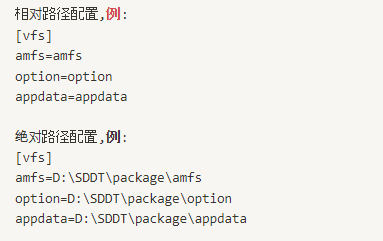
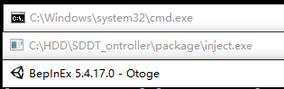
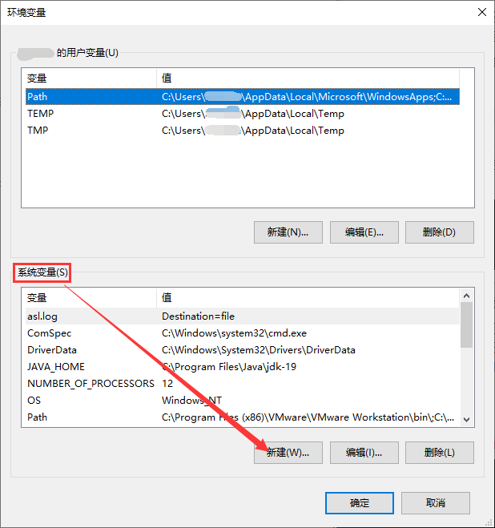

■0.前言
本教程将引导您进行游戏HDD的配置与运行，在此预祝您游戏愉快！
■1.游玩前的准备及注意事项
1.1【注意事项】(请在观看教程前务必阅读)
在您游玩前请务必注意，本教程(以下称本文)中的运行设置以及工具部分是按照DJDAO-O.N.T.R.O.L.L.E.R(以下称DAO台)为基准进行编写的，其中segatools部分的内容可能不适用于DAO台以外的任何输入方式及设备，如您使用DAO台以外的其他输入方式或设备,请参考这篇文章来进行设置。
另外，在您向其他玩家以及群组或社区求助前，请务必检查自己是否已经阅读本文的每一步骤，如有遗漏请返回对应步骤或常见问题先自行排查所遇到的问题，如以上方法确实不能解决您遇到的问题再寻求帮助。
在提问前，请携带游戏Log窗口(一般为同时与游戏窗口启动的CMD窗口)截图或游戏窗口截图以及其他可能反应问题的图片视频等，详细描述你所遇到的问题和情况并向玩家及群组或社区求助。如您遇到严重的硬件问题，请向鸽屋淘宝客服或DJDAO官方寻求帮助！
1.2【下载游戏及所需的工具】
1.2.1 请前往下载页下载如下文件
SDDT_1.40.00_20230927170554_0.vhd : 游戏本体
ontroller_segatools.zip : 使用DAO台游玩,启动游戏所需的必要工具
runtime.zip : 游戏所需运行库
option(A001~A108).zip : 官方游戏追加资料
A200.zip : 官方删除曲包
amfs_1.40.zip : 1.40用ICF
1.2.2 为保证游戏正常运行，请先安装runtime
1.2.3 建议您使用最新版Windows 10或11操作系统来运行游戏
1.2.4 其他手台请在1.4步骤查看通用segatools配置的文章
1.3【从VHD文件中提取游戏文件】
| 提取VHD有7zip、PowerISO、Windows直接挂载三种方法，本文默认使用Windows直接挂载VHD来提取游戏文件 |
| 注意! HDD路径不能有中文且不可放置在E盘，且不建议放置在更大盘符的分区中! |
1.3.1 双击SDDT_1.40.00_20230927170554_0.vhd，Windows会自动挂载此VHD文件为虚拟磁盘分区(挂载的盘符因人而异，请根据你的电脑为准！)
1.3.2 将挂载后虚拟分区中的游戏文件全部复制到其他盘保存，例如：C:/SDDT/
1.3.3 提取完游戏文件后，可在虚拟盘符上点击鼠标右键选择弹出来卸载虚拟分区以便操作或删除VHD文件(VHD文件建议保留一段时间，如果游戏出现问题需要重新配置可免去重新下载的麻烦)
1.4 配置HDD
1.4.1 解压ontroller_segatools.zip，将全部文件复制到游戏目录下的package文件夹中，如果提示覆盖文件请选择是，得到如下文件：
1.4.2 使用文本编辑器类软件打开package文件夹中的segatools.ini
| 建议您使用支持代码高亮的文本编辑器来修改配置文件，例如：Notepad++、VS Code、Sublime Text等，不建议使用Windows自带的记事本。另外请勿使用各种富文本编辑器(例如：word、写字板等)，富文本编辑器可能会对配置文件的文本格式有破坏导致游戏不能读取到正确的配置文件！ |
[vfs]
• 将amfs，option，appdata设置为对应文件夹的绝对路径或关于package文件夹的相对路径，下面是举例，请根据你的实际情况设置路径
• 这里建议您保持文件默认使用的相对路径即可，如遇到比如读取不到版本号，读取不到option资料的情况下在尝试使用绝对路径

[aime]
• 读卡器的相关设定
° 如您使用虚拟读卡器(长按Enter读卡)，请保持默认的enable=1
° 如您使用外接读卡器¹(官方拆机件或一部分自制读卡器)，请将enable=1修改为0
° aimePath与felicaGen无需修改
[dns]
• 游戏服务器设置
° HDD需要连接到可用的离线或在线服务器才可以正常游玩并存取玩家数据
° 将需要连接的服务器地址或本地服务器IPv4地址填入default=后即可
° 所有公益在线服登录网页端都需要先在对应服务器游玩一次并成功保存才可以登录
° 为保证教程易读性，本文仅对在线服做使用说明，离线服配置与使用请参考[这篇文章]
可用服务器一览
※目前大部分在线服均为玩家架设的公益性质服务器，可能会有连接不稳定、服务器关闭或停机维护、随时增加或删减功能的可能性，使用前请谨慎考虑！）
服务器地址：nageki.nananana.net 、nageki-net.com 、ongeki.moe
前端网页地址：上述地址均可访问
说明：购买GP等待时间短，前端功能全面，支持网页端抽卡，查询B45及个人成绩等。
服务器地址：aqua.naominet.live
前端网页地址：https://portal.naominet.live/login
测试版前端地址：https://portal-beta.naominet.live
服务器状态查询：https://status.naominet.live
说明：购买GP等待时间短，支持网页端抽卡，查询个人成绩等。
服务器地址：aime.msm.moe、ea0.msm.moe 、ea1.msm.moe、114.132.244.86
前端网页地址：https://portal.naominet.live/login
测试版前端地址：https://portal-beta.naominet.live
服务器状态查询：https://status.naominet.live
说明：服务器在国外连接较为不稳定(有反馈经常间歇性断线)，购买GP等待时间很长，支持网页端抽卡和查询成绩。
[netenv]
• 读卡器的相关设定
° 内网与联机相关设置，目前无需任何修改
° 后期如有成熟的联机方案在更新此项
[keychip]
• 加密狗相关，可选设置
° 如果你使用的在线服需要验证keychip才可连接，请取消;id=前的分号注释并在后面填写分配给您的加密狗号，例如：id=A63E-01A99999999
° 后期如有成熟的联机方案在更新此项
° 如不需要验证加密狗号请保持默认注释的状态
° gameId=SDDT此项保持默认即可无需修改
[gpio]
• 此项目前无需任何修改
[gfx]
• 此项目前无需任何修改
[io3]
• 此项目前无需任何修改
[io4]
• 此项目前无需任何修改
1.4.3 保存并关闭segatools.ini
1.4.4 关于高刷新率模式(存疑)
• 依照目前的情况为自适应显示器的最高刷新率,建议锁定mu3.exe的最大刷新率为120并关闭显卡的垂直同步选项
• 高刷功能貌似为强制开启且无法自行关闭及设置
• 如果你有高刷mod也可自行尝试
• 后续有变化在继续更新此项
|
！！注意！！
高刷新率以及高分辨率可能需要较高的CPU性能，使用的刷新率越高可能会对CPU的负担以及性能需求越高。 |
■2.游玩前的准备及注意事项
2.1 虚拟Aime卡号设置
| 根据上面的步骤,现在你已经具备运行HDD的基本需求了,下面将进行一些运行前的最后设置 |
| 游戏数据的保存需要你设置虚拟卡号文件，如果你有读卡器请直接刷卡，不用建立卡号文件，OPT则影响到游戏内容，缺少OPT可能导致缺歌或网络错误等问题 |
• 请至游戏目录下package/DEVICE文件夹，在其中新建一个名为aime的文本文档文件(aime.txt)，并在其中输入20位阿拉伯数字的卡号,可以是你手中拥有的实体卡背面的ACCESS CODE也可以直接使用其他游戏的aime.txt，例如：chunithm、maimai等
• 建立好后直接在游戏里长按Enter刷卡即可
2.2 安装游戏追加内容(option)
2.2.1 解压上文中下载的option(A001~A108).zip以及A200.zip
2.2.2 将解压出的文件夹放入package中的option文件夹
2.3 启动游戏
| 非DAO台请跳过2.3.1 |
2.3.1 在启动游戏前请务必连接手台
• 手台默认为Keyboard模式，游玩本游戏必需要切换到WINUSB模式
° 下载手台上位机程序
[点此下载 ONTROLLER-options-V1.8]
■插入手台的USB TYPE-B数据线
■解压后打开ONTROLLER-options-V1.8.exe (界面语言可在右侧切换)
■Mode switch下拉菜单选择WINUSB mode
■点击Click to switch切换模式，听到USB连接声音后关闭软件即可
• ONTROLLER-options的其他操作以及介绍可以点击查看官网
2.3.2 设置游戏启动参数
• 游戏默认为窗口运行，如需全屏启动请修改start.bat
• 在start.bat上右键选择编辑或用其他文本编辑器打开
• 将上述命令中-screen-fullscreen 0 修改为1 即可全屏启动游戏
° 如果需要无边框窗口模式启动游戏，请将-popupwindow添加到上述命令末尾即可(与前面命令需要空格空开)
• 多屏幕启动可以在上述命令后添加-monitor 2
• 保存并关闭文件
2.3.3 双击package中的start.bat
• 第一次启动游戏建议使用窗口模式以便观察游戏运行状态
• 游戏启动后会先弹出3个窗口：(通用版不会弹出BepInEx窗口)

• 其中inect.exe窗口会显示游戏运行相关信息
° 如果有弹出inject窗口(此窗口启动后自动最小化)并正常输出信息并且手台灯光全熄灭，则手台连接成功
° 如果未弹出inject窗口并且手台灯光未熄灭，此时手台与游戏未正常通信，请关闭所有窗口和游戏窗口，检查手台是否与电脑正确连接，然后重新启动游戏
° 重启游戏后inject窗口依然未弹出，可以尝试鼠标右键点击start.bat以管理员启动
° 以上均不能解决的话，可以在群内询问
• 弹出窗口后等待几秒游戏窗口便会出现，窗口名为Otoge
° 游戏窗口出现下图所示并且显示ゲームデータ 初期化中则表示游戏正在加载资源中
° 第一次启动游戏此处需要等待比较长的时间，加载完成后游戏会在package中生成缓存文件，之后每一次启动游戏都会加快载入速度
° 如果卡在システムプロセス 起動中不跳GOOD一直过不去，也没有出现ゲームデータ 初期化中，这种情况是因为AMDaemon没有启动，下面是可能解决此问题的方法：
■ 常⻅情况是，机器的CPU是Intel第⼗代酷睿或者更新的CPU，同时⼜打开了ALL.Net Accounting机制（这个机制默认开的）。由于这个机制使⽤了OpenSSL的较早期版本，⽽在新的CPU上因为Intel的bug会导致应⽤崩溃。
■ 添加OPENSSL系统变量
° 我的电脑(此电脑)→属性→高级系统设置→高级选项卡→环境变量

° 在系统变量中新建新的变量并填入以下信息

° 变量名 : OPENSSL_ia32cap 变量值 : ~0x20000000
° 点击确定保存系统变量设定
° 建议重启电脑后再运行游戏
■ 添加OPENSSL系统变量
° 接下来会来到网络自检，如下图
■ 此时如果所有自检项目均为GOOD，表示通过，请继续向下阅读
■ 如果一直卡在Aime Check过不去，可以尝试下面的方法
• 可能手台没有连接成功，请关闭所有窗口检查手台连接并重新启动游戏
• 可能需要关闭或打开游戏的E-Money功能(默认为开启)
° 关闭游戏及相关窗口
° 用文本编辑器打开package中的config_common.json
° 找到"emoney"字段并修改其中的"enable"
° true为开启E-Money功能，false为关闭
° 保存文件并重启游戏
■ 可能遇到的网络自检问题：
• IP ADDRESS BAD：获取IP地址失败，segatools.ini中的DNS未填入正确的服务器地址或使用了127.0.0.1作为服务器地址
• ALL.Net AUTHENTICATION BAD：ALL.Net认证失败，segatools.ini中的DNS未填入正确的服务器地址或需要有效的keychip加密狗号才可连接服务器，或服务器出现故障等
• タイトルサーバー BAD：标题服务器连接失败，可能服务器连接出现问题，请稍后在试或尝试重启游戏
• 等待下图自检通过即可进入游戏
2.4 游玩前的最后设置